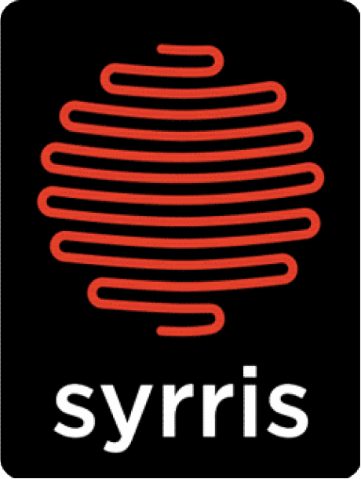

|  | AsiaPumpInterface.h - Asia Pump Interface Library ReferenceVersion 1.1, Dec 2016 |
This document describes the C language application programming interface (API) for the Asia pump. You can use this information to remotely control your Asia pump from your own Windows® application. Three interface files and a folder containing the USB driver files for the pump are provided.
This document is the main reference to the Asia pump C interface API. Using this interface, all the normal functions available on the Asia pump front panel are available to a suitably written Windows® application.
A description of the included files
|
File
|
Comment
|
| AsiaPumpInterface.h | The main C header file for the interface. |
| AsiaPumpInterface.dll | The Windows® interface dynamic link library itself. |
| AsiaPumpInterface.lib | The import library to link into applications developed in Microsoft Visual C++ and other languages. |
| AsiaPumpInterface_x64.dll | The Windows® interface dynamic link library itself, 64-bit version (requires a 64-bit host application). |
| AsiaPumpInterface_x64.lib | The import library to link into applications developed in Microsoft Visual C++ and other languages. Project for 64-bit platform only. |
| ftd2xx.dll, ftd2xx64.dll | The driver access module, required by the main library. |
| "USB drivers" folder | Contains the required USB subsystem drivers to allow Windows® to recognise and run the pump. Both x86 and x64 versions of Windows are supported. |
| "Examples" folder | Contains a python script to demonstrate how the API can be used to control the pump. |
In general, you should proceed as follows.
All except four of the function listed below return a boolean value of TRUE if completed successfully. If a value of FALSE is returned, check the error by calling getLastError() which returns a human readable error string. Typically, you will proceed as follow:
Interface Library SpecificationThe interface consist of a single define, a single enumeration and nineteen function calls. These are explained in detail below. Defines |
|
| #define | ASIAPUMP_INTERFACE_API __declspec(dllimport) |
Enumerations |
|
| enum | ePumpState { Error = -1, Uninitiased = 0, Initialising = 1, Idle = 2, Filling = 3, Full = 4, Emptying = 5, Empty = 6, Pumping = 7 } |
Functions |
|
| ASIAPUMP_INTERFACE_API unsigned int | scanForAsiaPumps () |
| ASIAPUMP_INTERFACE_API void | clearUp () |
| ASIAPUMP_INTERFACE_API BOOL | enterRemoteMode (unsigned int pumpIndex) |
| ASIAPUMP_INTERFACE_API BOOL | exitRemoteMode (unsigned int pumpIndex) |
| ASIAPUMP_INTERFACE_API const char * | getLastError (unsigned int pumpIndex) |
| ASIAPUMP_INTERFACE_API BOOL | pumpStatus (unsigned int pumpIndex, unsigned int channel, int * errorCode, int * pumpState, float * pumpRate, float * pressure, float * lastOverPressure) |
| ASIAPUMP_INTERFACE_API BOOL | pumpStop (unsigned int pumpIndex, unsigned int channel) |
| ASIAPUMP_INTERFACE_API BOOL | stopAllPumps () |
| ASIAPUMP_INTERFACE_API BOOL | getPumpVersion (unsigned int pumpIndex, int * majorVersion, int * minorVersion, int * miscVersion) |
| ASIAPUMP_INTERFACE_API BOOL | getSyringeSize (unsigned int pumpIndex, unsigned int channel, float * syringeSize) |
| ASIAPUMP_INTERFACE_API BOOL | fill (unsigned int pumpIndex, unsigned int channel, float rate) |
| ASIAPUMP_INTERFACE_API BOOL | empty (unsigned int pumpIndex, unsigned int channel, float rate) |
| ASIAPUMP_INTERFACE_API BOOL | pump (unsigned int pumpIndex, unsigned int channel, float rate) |
| ASIAPUMP_INTERFACE_API BOOL | acknowledgeOverPressure (unsigned int pumpIndex, unsigned int channel) |
| ASIAPUMP_INTERFACE_API BOOL | getOverPressureStrategy (unsigned int pumpIndex, unsigned int * strategy) |
| ASIAPUMP_INTERFACE_API BOOL | setOverPressureStrategy (unsigned int pumpIndex, unsigned int strategy) |
| ASIAPUMP_INTERFACE_API BOOL | changeOver (unsigned int pumpIndex, unsigned int channel) |
| ASIAPUMP_INTERFACE_API BOOL | initialiseChannel (unsigned int pumpIndex, unsigned int channel) |
| ASIAPUMP_INTERFACE_API const char * | getSerialNumber (unsigned int pumpIndex) |
| #define ASIAPUMP_INTERFACE_API __declspec(dllimport) |
| enum ePumpState |
Describes the status of the pump. Note that states Full and Empty will be set after a fill or empty command rather than state Idle, i.e. to check if the pump is NOT running you must check the pumpStatus pumpState is (Full OR EMPTY OR Idle)
| Error = -1 | |
| Uninitialised = 0 | |
| Initialising = 1 | |
| Idle = 2 | |
| Filling = 3 | |
| Full = 4 | |
| Emptying = 5 | |
| Empty = 6 | |
| Pumping = 7 |
| ASIAPUMP_INTERFACE_API BOOL acknowledgeOverPressure | ( | unsigned int | pumpIndex, | |
| unsigned int | channel | |||
| ) |
Acknowledge the overpressure flag. After an overpressure event the overpressure flag remains set until the overpressure clears and we acknowledge the event.
| pumpIndex | Target pump for message | |
| channel | Channel on which to acknowledge the overpressure |
| BOOL | True for success, false for fail |
| ASIAPUMP_INTERFACE_API BOOL changeOver | ( | unsigned int | pumpIndex, | |
| unsigned int | channel | |||
| ) |
This will move both syringes to the bottom, allowing them to be physically removed.
| pumpIndex | Target pump for this message | |
| channel | Pump channel for change |
| BOOL | True for success, false for fail |
| ASIAPUMP_INTERFACE_API VOID clearUp ( ) |
Release all pumps and ensures everything is stopped. Always call this function as the last call before exiting.
| None |
| Nothing |
| ASIAPUMP_INTERFACE_API BOOL empty | ( | unsigned int | pumpIndex, | |
| unsigned int | channel, | |||
| float | rate | |||
| ) |
Tell pump to empty. Drives both syringes on the target pump/channel to the top.
| pumpIndex | Target pump for messaage | |
| channel | Channel to empty | |
| rate | Rate at which to empty pump |
| BOOL | True for success, false for fail |
| ASIAPUMP_INTERFACE_API BOOL enterRemoteMode | ( | unsigned int | pumpIndex | ) |
Put pump into remote mode. This locks the front screen of the pump (shows EXTERNAL CONTROL) and allows the PC to set asia control.
This mode will automatically exit if the PC does not communicate with the pump at least once every 10 seconds.
| pumpIndex | Target pump for message |
| BOOL | True for success, false for fail |
| ASIAPUMP_INTERFACE_API BOOL exitRemoteMode | ( | unsigned int | pumpIndex | ) |
Stops the pump, puts it back into manual mode and unlocks the menu system on the pump.
In manual mode only query type commands will work on this pump through the PC interface.
| pumpIndex | Target pump for message |
| BOOL | True for success, false for fail |
| ASIAPUMP_INTERFACE_API BOOL fill | ( | unsigned int | pumpIndex, | |
| unsigned int | channel, | |||
| float | rate | |||
| ) |
Tells target pump/channel to fill at specified fill rate.
| pumpIndex | Target pump for message | |
| channel | Channel to fill | |
| rate | Fill rate to use |
| BOOL | True for success, false for fail |
| ASIAPUMP_INTERFACE_API const char* getLastError | ( | unsigned int | pumpIndex | ) |
Returns a human readable string about the last error encountered on a given pump. This is the error communicated to the PC by any failed command.
| pumpIndex | Target pump for message |
| pointer to a null terminated string | Human readable string describing most recent error on this pump |
| ASIAPUMP_INTERFACE_API BOOL getOverPressureStrategy | ( | unsigned int | pumpIndex, | |
| unsigned int * | strategy | |||
| ) |
Request for the current overpressure strategy on the pump. Strategy is
| pumpIndex | Target pump for message | |
| strategy | Strategy currently in use |
| BOOL | True for success, false for fail |
| ASIAPUMP_INTERFACE_API BOOL getPumpVersion | ( | unsigned int | pumpIndex, | |
| int * | majorVersion, | |||
| int * | minorVersion, | |||
| int * | miscVersion | |||
| ) |
Obtain the firmware version on a given pump.
| pumpIndex | Target pump for message | |
| majorVersion | Major number in version | |
| minorVersion | Minor number in version | |
| miscVersion | Miscellaneous number in version |
| BOOL | True for success, false for fail |
| ASIAPUMP_INTERFACE_API BOOL getSyringeSize | ( | unsigned int | pumpIndex, | |
| unsigned int | channel | |||
| float * | syringeSize | |||
| ) |
Get current syringe size on a particular pump.
The value returned is the volume of the smaller syringe of the pair("V") in μl. The larger syringe ("2V") is twice this volume.
| pumpIndex | Target pump for message | |
| channel | Target channel | |
| syringeSize | Syringe size on pumpindex/channel |
| BOOL | True for success, false for fail |
| ASIAPUMP_INTERFACE_API BOOL initialiseChannel | ( | unsigned int | pumpIndex, | |
| unsigned int | channel | |||
| ) |
Initialise the given channel on the pump.
| pumpIndex | Target pump for message | |
| channel | Channel to initialise |
| BOOL | True for success, false for fail |
| ASIAPUMP_INTERFACE_API BOOL pump | ( | unsigned int | pumpIndex, | |
| unsigned int | channel, | |||
| float | rate | |||
| ) |
Start pumping on the specified pump/channel at the specified rate.
| pumpIndex | Target pump for message | |
| channel | Channel to start pumping on | |
| rate | Rate to pump in μl/minute |
| BOOL | True for success, false for fail |
| ASIAPUMP_INTERFACE_API BOOL pumpStatus | ( | unsigned int | pumpIndex, | |
| unsigned int | channel, | |||
| int * | errorCode, | |||
| int * | pumpState, | |||
| float * | pumpRate, | |||
| float * | pressure, | |||
| float * | lastOverPressure | |||
| ) |
Returns status of a given pump.
| pumpIndex | Target pump for message | |
| channel | Channel to query status | |
| errorCode | Pump error field | |
| pumpState | One of the ePumpState enumerations | |
| pumpRate | Current pumping rate in μl/minute | |
| pressure | Current pressure reading in bar | |
| lastOverPressure | Pressure last time pump went 'overpressure' in bar |
| BOOL | True for success, false for fail |
| ASIAPUMP_INTERFACE_API BOOL pumpStop | ( | unsigned int | pumpIndex, | |
| unsigned int | channel | |||
| ) |
Halt asia control on the pump and stops the pump.
| pumpIndex | Target pump to stop | |
| channel | Target channel to stop |
| BOOL | True for success, false for fail |
| ASIAPUMP_INTERFACE_API unsigned int scanForAsiaPumps | ( ) |
Returns the number of Asia Pumps attached to the PC, not being used by another process.
Must be called before any other function!
Pumps found are accessible by other functions using a zero based pumpindex i.e. a for system with 1 pump, it's index is 0, two pumps use indices 0 and 1 etc. Each pump contains two channels indexed 0 (left pump) and 1 (right pump).
| None |
| Unsigned Int | number of Asia pumps attached to the PC |
| ASIAPUMP_INTERFACE_API BOOL setOverPressureStrategy | ( | unsigned int | pumpIndex, | |
| unsigned int | strategy | |||
| ) |
Set the overpressure strategy to use. Values can be:
| pumpIndex | Target pump for message | |
| strategy | Which strategy to use |
| BOOL | True for success, false for fail |
| ASIAPUMP_INTERFACE_API BOOL stopAllPumps | ( ) |
Stop all connected pumps.
| BOOL | True for success, false for fail |
| ASIAPUMP_INTERFACE_API const char* getSerialNumber | ( | unsigned int | pumpIndex | ) |
Returns a string representing the serial number of pumpIndex.
| pumpIndex | Target pump for message |
| pointer to a null terminated string | The serial number of the pump at pumpindex. |
| © 2010-2016 Syrris Ltd. | |